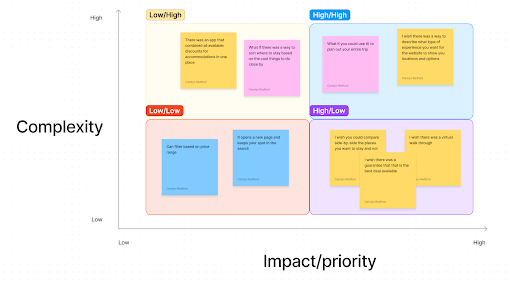
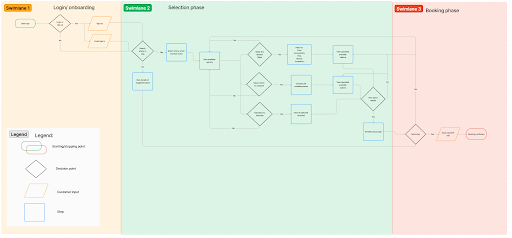

Our Place was primarily a user research project. The goal was
to find any gaps in the travel industry, specifically when it
comes to finding a place to stay.
Problem: Finding discounts and deals for travel
accommodations is exhausting and can feel like a scam.
Goal: Create a safe and user-friendly app that provides
discount information for accommodations when traveling.
Price comparing became, through research, the easiest and
most available way to accomplish this.
Value proposition: "Our Place" provides price compare to
quickly find the best price on accommodations for you.
Deliverables
Proto-persona, User persona, User interviews, Affinity Map,
Feature prioritization, value proposition statement,
Storyboard, Journey map, Competitor analysis, User Flow,
Wireframes, Prototypes, Testing
Phase 1: User Research
Key takeaways:
Greatest pain point was the overwhelm people felt when searching for
good deals
Most app used to find a place to stay = Airbnb
People do not want to spend hours trying to find a deal
This leads to burnout and under-planned trips
Typically people are not willing to pay for an app or subscription that
tells them the best discounts or deals available
People want a nice place to stay that is comfortable and safe, but still
allows them to spend their money on experiences
They need their necessities covered, but not at the expense of missing
out on other things they could do, see or eat
Most discounts for accommodations appear to be a scam
This scares people off and prevents them from taking the deal
Key takeaways:
Greatest pain point was the overwhelm people felt when searching for
good deals
Most app used to find a place to stay = Airbnb
People do not want to spend hours trying to find a deal
This leads to burnout and under-planned trips
Typically people are not willing to pay for an app or subscription that
tells them the best discounts or deals available
People want a nice place to stay that is comfortable and safe, but still
allows them to spend their money on experiences
They need their necessities covered, but not at the expense of missing
out on other things they could do, see or eat
Most discounts for accommodations appear to be a scam
This scares people off and prevents them from taking the deal
Phase 2: Definition and Synthesis
The features selected to focus on when creating this new app were virtual walkthrough, deal guarantee and side-by-side comparison.
Problem statement: Finding discounted accommodations is near impossible. Travelers typically have a hard time comparing prices and
finding available discounts. Our vacationers need to easily find inexpensive places to stay while traveling while still meeting their
needs. This will allow them to spend their time and money on other excursions.

Phase 3: Ideation
Each box from the user flow was made into a
separate screen, except for the Search and
Suggestion boxes because they would accomplish
the goal of finding a location better if they were
paired.
Phase 4: Prototyping
The wireframe proposes how the user will be able to easily
accomplish the task of finding great deals for travel
accommodations and booking them.
Using the competitor analysis, I was able to combine good
ideas and eliminate pain points.

Phase 5: User Testing
“Skip Login” option was added.
Favorites page added.
“Select to compare” buttons added.
Cleared up the search/ suggestion pages
Phase 6: Future Opportunites
The proto-person shaped the demographics of the people interviewed. The interview’s helped to determine the greatest goals
and pain points of a user when it comes to planning trips.
Focusing in on that information, user’s want viable secure options for places to stay that are well-priced but still meet their
needs and don’t overly-compromise in either direction.
The prototype meets the user needs by allowing them multiple options where they can filter for their price range, but also
compare the places that intrigued them the most.
The prototype could be improved by implementing active and inactive states for buttons. Specifically the main “Compare”
button; inactive before any places are selected, and active afterward. Clearing up the back button and the pages the user is sent
to would also be helpful. For example, when the user is on the Hotel Selection page, the flow back would depend on if the user
came from the Favorites page, Compare page or the Search page.